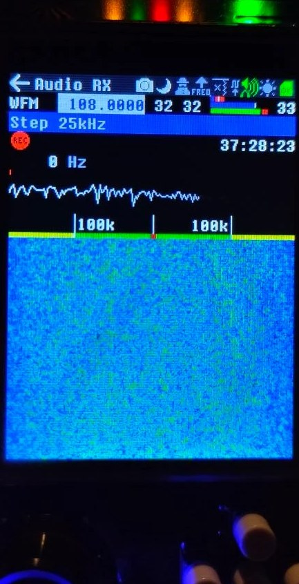

Audio (аудіоприймач)¶

Скріншот з пристрою: Приймачі: огляд застосунків.
Вступ¶
Застосунок Audio — основний спосіб почути й детально побачити сигнали. Він має кілька декодерів для звукових сигналів і режим перегляду спектра.
Режими¶
- SPEC — показ спектра прийнятого сигналу: до 10 МГц ВЧ-спектра навколо заданої частоти (5 МГц вище й 5 МГц нижче).
- AM — демодуляція й запис амплітудно-модульованих сигналів: AM з двома бічними смугами (позначення ITU: A3E), а також з однією нижньою й верхньою бічною смугою (R2E, H3E, J3E).
- NFM — вузькосмугова частотна модуляція (класифікація ITU: F3E). Рації, PMR, служби.
- WFM — широкосмугова FM: демодуляція й запис моно та стерео сигналів зі смугою 200 кГц. Такі сигнали використовує FM-мовлення на VHF.
- AMFM (USB+FM) — запис сигналу APT від КХ-станцій метеофаксу в аудіофайл
.wav, переважно для дослідження й перевірки рівнів сигналу (сила сигналу, насичення, фільтри). Зручніше для цього — окремий застосунок WeFax (на тому ж рушії AMFM), який також показує карту на екрані й записує її в BMP у повній роздільності. - FMAM — запис сигналу APT 137 МГц від (уже виведених з експлуатації) аналогових метеосупутників NOAA. Для цього є окремий застосунок NOAA APT.
Про режим AMFM (метеофакс)¶
Демодуляція виконується у два кроки: спершу ВЧ-сигнал демодулюється в USB (отримуємо звукові тони), а потім демодулюється FM-модульована звукова піднесуча, щоб отримати сигнал APT карти. Сигнал одночасно йде на динамік (для налаштування на слух) і може бути записаний на SD-карту у файл audio.wav (частота дискретизації 12 кГц, моно).
Параметри: піднесуча 1900 Гц, FSK ±400 Гц; білий піксель — +400 Гц = 2300 Гц, чорний — −400 Гц = 1500 Гц. Для зручності в обох застосунках (Audio в режимі AMFM і WeFax) потрібне зміщення налаштування застосовується автоматично — просто налаштуйтеся на опубліковану частоту станції метеофаксу (наприклад, 3855 кГц, 7880 кГц, 8040 кГц…).
HackRF має низьку чутливість для прямого прийому КХ-метеофаксу (переважно 3–16 МГц). Зазвичай потрібен апконвертер з кращими фільтрованими КХ-підсилювачами й досить добра КХ-антена.
Формат WEFAX походить від Automatic Picture Transmission (APT), розробленого для полярних супутників США. WEFAX має швидкості 60, 90, 100, 120, 180 і 240 рядків за хвилину (LPM) і два режими IOC (індекс співпраці): 576 і 288. Більшість прогнозів передається в IOC 576, 120 LPM. Розклад станцій метеофаксу у світі: https://weatherfax.com/stations/
Основні елементи екрана¶
- Рядок заголовка — звичні значки.
- Режим — під рядком заголовка: AM, NFM, WFM, SPEC. Залежно від режиму нижче з'являється рядок додаткових параметрів (див. нижче).
- Частота — центральна частота смуги демодуляції.
- З поля частоти можна перейти вниз до поля Step, щоб вибрати зручний крок.
- Якщо ввімкнено збереження налаштувань застосунків, використовується останній крок. Його також можна змінити у файлі
/SETTINGS/rx_audio.iniна SD-карті. - Починаючи з версії 1.7.4: утримуйте Select на полі частоти близько секунди, доки цифра не стане синьою, — тоді кнопками вліво/вправо вибирайте розряд, а енкодером змінюйте його на ±1 для точного налаштування. Ще раз натисніть Select, щоб вийти.
- Підсилення — LNA (0–40) і VGA (0–62). Коли одне з них вибрано, у додатковому рядку показується AMP: 0 = 0 дБ або 1 = 14 дБ.
- Індикатори сигналу — три кольорові смужки (згори вниз): RSSI (червоний/синій) з позначкою середнього, сигнал основної смуги, рівень звуку.
- Гучність — останній елемент рядка (0–99), для навушників чи динаміка.
Додатковий рядок для кожного режиму¶
- AM — смуга: DSB 9k, DSB 6k, USB+3k, LSB-3k, CW. Спектр — від ±90 кГц до ±11,25 кГц залежно від масштабу (ZOOM x1, x2, x3, x4). Є функція зсуву частоти. Також є поле SQ у вигляді
SQ /99— необов'язковий шумоподавлювач за потужністю каналу (0–99, за замовчуванням 0 = вимкнено). Він окремий від шумоподавлювача NFM. Якщо більше 0, звук глушиться, поки потужність каналу нижча за поріг (близько −80 дБFS при 1, до −20 дБFS при 99) — це приглушує порожній AM-канал між передачами. - NFM — смуга: 16k, 11k, 8k5. Немає поширеного в Європі 6k5. Далі SQ у форматі
40/99— поріг шумоподавлювача 0–99; зазвичай 40–50 — хороший поріг. Також є зсув частоти. - Gain — налаштування ВЧ-підсилювача. Спектр ±20 кГц.
- USB+FM (метеофакс) — двокрокова демодуляція: спершу USB, потім FM-піднесучої, щоб отримати сигнал карти APT (можна записати у
audio.wav). Просто налаштуйтеся на опубліковану частоту станції — зміщення −1,9 кГц застосовується автоматично. - FM-AM (NOAA) — використовувався для аналогових супутників NOAA на 137 МГц: спершу WFM (~38 кГц), потім AM-піднесуча з APT (~2 кГц).
Інші елементи¶
- Кнопка запису (REC) — натисніть, щоб почати запис, ще раз — щоб зупинити.
- Маркер частоти — під значком REC є поле маркера (0 Гц), яке змінюється енкодером у межах 0–48 кГц кроком 200 Гц. Воно рухає червону вертикальну риску на графіку ШПФ демодульованої основної смуги FM. Корисно, щоб точно визначити частоту піків, наприклад пілот-тону 19 кГц стереомовлення FM.
- Форма сигналу — якщо перейти нижче маркера й виділити відображення форми сигналу, його можна вимкнути одним натисканням.
- Зсув частоти — якщо перейти нижче форми сигналу або просто торкнутися екрана, вмикається режим зсуву частоти. Миготлива червона крапка показує наступну позицію. Обертайте енкодер або торкніться екрана й натисніть Enter, щоб встановити нову частоту.
Примітка: усі режими AM (DSB 9K, DSB 6K, USB, LSB, CW) і AMFM мають опцію розширення водоспаду ZOOM x1 / x2 / x3 / x4, а режими AM — ще й зсув частоти.
WFM¶
У додатковому рядку три фільтри:
- 200k — оригінальний фільтр для FM-мовлення з м'яким переходом;
- 180k — для FM-мовлення з крутим переходом; корисний для слабких сигналів — покращує співвідношення сигнал/шум на 6–8 дБ;
- 40k — теж крутий перехід, для прийому метеосупутників NOAA APT на 137 МГц (для звичайного WFM з девіацією 75 кГц завузький і може спотворювати звук).
Спектр ±100 кГц з маркером.
SPEC¶
Додатковий рядок дозволяє вибрати максимальну ширину спектра:
- 20M з маркерами ±5M
- 10M з маркерами ±3M
- 5M з маркерами ±2M
- 2M з маркерами ±500k
- 1M з маркерами ±300k
- 500k з маркерами ±200k
Наступне поле — розмір комірок водоспаду (0–63): «0» — мінімум інформації й найшвидше оновлення, «63» — максимум інформації й найповільніше. Підберіть баланс між швидкістю й деталізацією.
Калібрування (Rx_IQ_CAL)¶
Праворуч, у режимі SPEC, є поле Rx_IQ_CAL. Воно може покращити (на 8–10 дБ від найгіршої точки до найкращої) придушення дзеркального каналу приймача (IRR) — лише в застосунках з нульовою ПЧ, як-от цей режим SPEC. Відкаліброване значення зберігається на SD-карті в /settings/rx_audio.ini.
Порядок калібрування:
- Знайдіть чистий ізольований безперервний сигнал несучої з ефіру (переконайтеся, що це справжній сигнал, а не внутрішня гармоніка тактового генератора) і налаштуйтеся на нього так, щоб він був, наприклад, праворуч (на додатних частотах).
- Виберіть смугу SPEC так, щоб ізолювати цю несучу (наприклад, BW = 2 МГц).
- Встановіть CAL на 0 (мінімум), щоб дзеркальна частота стала помітнішою в симетричній лівій частині екрана.
- Налаштуйте AMP, LNA і VGA так, щоб сигнал праворуч був досить сильним (але без інтермодуляцій), а дзеркальний ліворуч — ледь помітним.
- Змінюйте Rx IQ CAL, доки дзеркальний сигнал не стане мінімальним.
На HackRF з MAX2837 (r1–r8) — 31 крок, з MAX2839 (r9) — 64 кроки.
NFM¶
- CTCSS — система шумоподавлення з безперервним субтоном (стандарт EIA/TIA, опис) показується в кінці додаткового рядка. У режимі NFM поле тону розширено з 11 до 14 символів. Частота тону й номер коду CTCSS показуються одночасно (якщо знайдено відповідність у таблиці). Здебільшого показ «стрибає» і чітко видно тон лише в паузах мови при якісному сигналі.
- Запис — кнопка запису показує ім'я файлу, відсоток заповнення SD-карти й залишок часу запису (зменшується під час запису). Ім'я 16-бітового моно-WAV містить дату, час і частоту. Частота дискретизації WAV залежить від режиму: 48 кГц для WFM, 24 кГц для NFM, 12 кГц для AM. Файли зберігаються в теці
AUDIO/.
Таблиця тонів CTCSS¶
| Код | Позначення | Частота, Гц |
|---|---|---|
| None | 0.0 | |
| 0 | XZ | 67.000 |
| 1 | WZ | 69.400 |
| 2 | XA | 71.900 |
| 3 | WA | 74.400 |
| 4 | XB | 77.000 |
| 5 | WB | 79.700 |
| 6 | YZ | 82.500 |
| 7 | YA | 85.400 |
| 8 | YB | 88.500 |
| 9 | ZZ | 91.500 |
| 10 | ZA | 94.800 |
| 11 | 1ZB | 97.400 |
| 12 | 21Z | 100.000 |
| 13 | 1A | 103.500 |
| 14 | 1B | 107.200 |
| 15 | 2Z | 110.900 |
| 16 | 2Z | 114.800 |
| 17 | 2B | 118.800 |
| 18 | 3Z | 123.000 |
| 19 | 3A | 127.300 |
| 20 | 3B | 131.800 |
| 21 | 4Z | 136.500 |
| 22 | 4A | 141.300 |
| 23 | 4B | 146.200 |
| 24 | 5Z | 151.400 |
| 25 | 5A | 156.700 |
| 40 | -- | 159.800 |
| 26 | 5B | 162.200 |
| 41 | -- | 165.500 |
| 27 | 6Z | 167.900 |
| 42 | -- | 171.300 |
| 28 | 6A | 173.800 |
| 43 | -- | 177.300 |
| 29 | 6B | 179.900 |
| 44 | -- | 183.500 |
| 30 | 7Z | 186.200 |
| 45 | -- | 189.900 |
| 31 | 7A | 192.800 |
| 46 | -- | 196.600 |
| 47 | -- | 199.500 |
| 32 | M1 | 203.500 |
| 48 | 8Z | 206.500 |
| 33 | M2 | 210.700 |
| 34 | M3 | 218.100 |
| 35 | M4 | 225.700 |
| 49 | 9Z | 229.100 |
| 36 | -- | 233.600 |
| 37 | -- | 241.800 |
| 38 | -- | 250.300 |
| 50 | 0Z | 254.100 |
| Axient 28kHz | 28000.0 | |
| Senn. 32.768k | 32768.0 | |
| Senn. 32.000k | 32000.0 | |
| Sony 32.382k | 32382.0 | |
| Shure 19kHz | 19000.0 |
Знімок із пристрою¶

Приймання у режимі WFM на 108.0000 МГц (крок 25 кГц). Вгорі — частота й підсилення 32 32, нижче — осцилограма демодульованого аудіо та водоспад діапазону зі смугою ±100 кГц. Червоний значок REC зліва означає, що ввімкнено запис аудіо.